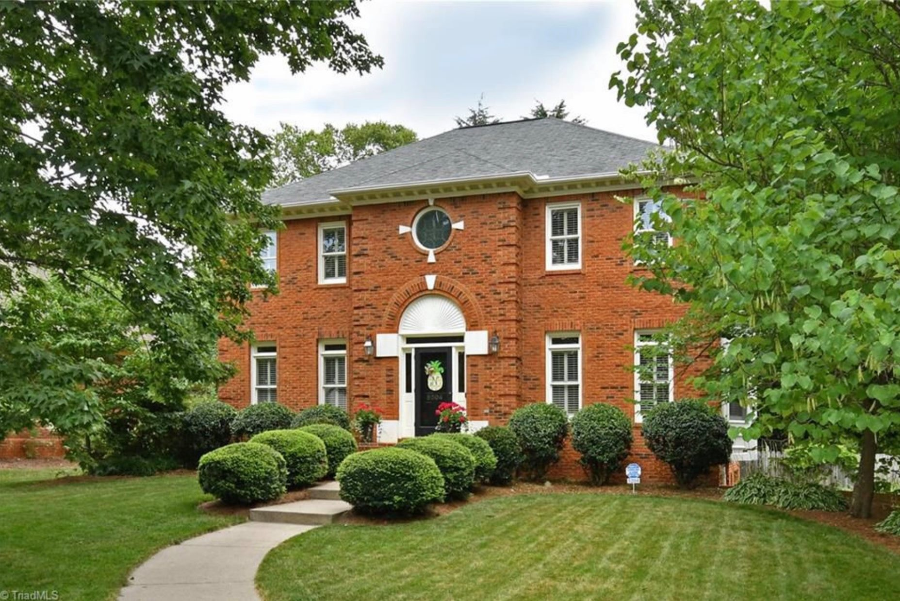

A Community for All — Winston-Salem, NC
A welcoming neighborhood that combines small-town charm with modern convenience in the heart of Winston-Salem.
A diverse neighborhood made up of young families, professionals, and retirees who share a close-knit bond.
From mid-to-large single-family homes in Barrington, Glenridge, and Huntscroft to cluster homes in The Gables.
Block parties, holiday celebrations, movie nights, and more bring neighbors together all year long.
Enjoy our large pool area, adjoining playground, sand volleyball court, and community picnic area.
Zoned for Jefferson Elementary, Jefferson Middle School, and Mt. Tabor High School — with Jeff Middle in walking distance.
Minutes from shopping, restaurants, hospitals, universities, and Winston-Salem's vibrant arts scene.

Glenridge is characterized by its diversity, inclusivity, and sense of community. Our neighborhood is made up of people of all ages, from young families with children to retirees, and everyone in between.
The close-knit relationships that exist between neighbors define who we are— reflected in the many events and activities that take place throughout the year.
Learn More About UsGlenridge features several distinct neighborhoods, each with its own character and housing options.